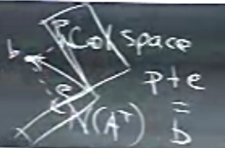
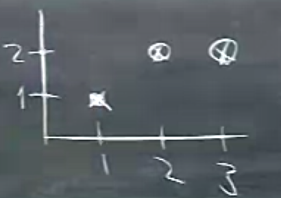
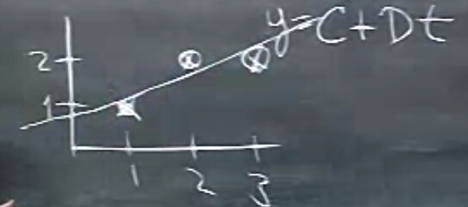
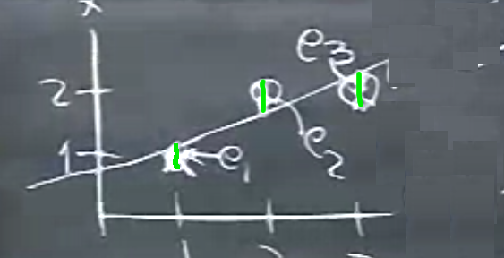
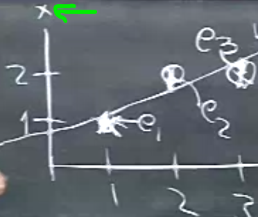
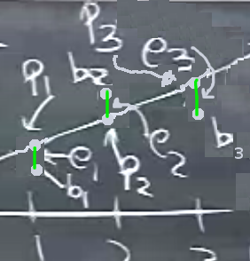
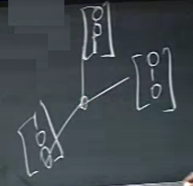
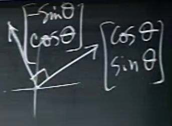

Önceki dersi hatırlarsak en sonda yansıtma matrisi diye bir matrisle bitirdik. Bu konunun bir daha üzerinden geçelim. Sihirli formülümüz
\[ P = A(A^TA)^{-1}A^T \]
ne yapıyordu? Yansıtma matrisi \(P\), \(b\)’yi alıp \(Pb\) çarpımı ile onun \(A\)’nin kolon uzayındaki izdüşümünü hesaplıyordu. Diyelim ki \(b\) zaten kolon uzayında, o zaman \(P\) ne yapar? Hiçbir şey. Yani \(Pb=b\). “Bu hiçbir şey’’ cevabı üstteki formülden doğal olarak çıkmalı. Peki eğer \(b\), \(A\)’nin kolon uzayına tam dik olsaydı? Yani üç boyutta düşünsek, \(A\) bir düzlem, \(b\) onun üzerinden yukarı tam dik bir şekilde fırlamış bir vektör. Bu vektörün alttaki düzlemde yansıması nedir? Sıfır. Yani \(Pb=0\). Bu iki durum oldukça sıradışı tabii ki, ama iyi zihin egzersizi olmaları açısından onlardan bahsettim. Çoğu durumda bir yansıma vardır.
Cebirsel olarak \(Pb=0\) durumuna inceleyelim; eğer \(b\), \(A\) kolon uzayına dik ise o zaman bu \(A^T\)’nin sıfır uzayındadır. Bu durumda \(Pb\),
\[ Pb = A(A^TA)^{-1}A^T b =A(A^TA)^{-1}\cancelto{0}{A^T b} = 0 \]
olur çünkü eğer \(b\) \(A^T\)’nin sıfır uzayında ise \(A^Tb=0\).
Öteki durumda, yani \(b\)’nin \(A\)’nin kolon uzayında olduğu durumu şöyle türetiriz; \(A\)’nin kolon uzayında olmak ne demektir? Bu \(Ax\) formundan ibaret, \(Ax\), \(A\)’nin kolon uzayında çünkü \(x\) \(A\)’nin kolonlarını kombine ediyor. Bunu artık pat diye görüyor olmamız lazım, hatta bir ufak sınava bile bu soruyu dahil edebilirim çünkü sürekli bahsettiğimiz bir şey. Neyse, bu \(b=Ax\) kombinasyonunu formüle koyalım,
\[ Pb = A(A^TA)^{-1}A^TAx = Ax = b\]
Bu nasıl oldu? \((A^TA)^{-1}\) ile \((A^TA)\) yanyana geldi, bu iki ifade birbirinin tersidir, o zaman çarpımları \(I\) olur, geri kalanlar \(Ax\), ki o da \(b\)’ye eşit.
Resmedersek,

Elimizde verili “tipik vektör’’ \(b\) var, tipik çünkü üstteki sıradışı durumlarda değil, ve bu vektörün kolon uzayına [resimde ‘col space’ olarak yazılı] izdüşümü \(P\) ile, \(A^T\)’nin sıfır uzayına izdüşümü ise \(e\) ile. \(P+e = b\). Bu yansıtmalar \(Pb\) ve hata için ona dik olan uzaya izdüşümü \((I-P)b\). Not: \(P\) yansıtma ise \(I-P\) de yansıtmadır, \(P\) simetrik ise \(I-P\) de simetriktir, \(P^2=P\) ise \((I-P)^2=I-P\). Cebir sadece resimde görülenleri tarif ediyor.
Böylece önceki dersin üzerinden geçmiş olduk, iyi oldu, çünkü baştaki formülü birden fazla kez görmenizi istedim. Şimdi bu formülü nasıl kulanacağımıza gelelim.
En iyi düz çizgi bulma probleminden devam ediyoruz. Diyelim ki elimizde şöyle veriler var,

Eğer veride sadece ilk iki nokta olsaydı onlar bir düz çizgi oluştururdu, resimde öyle duruyorlarr, ama üçüncü nokta olası bir çizginin kesinlikle dışında. Bu noktalar için en iyi düz çizgi \(y=C+Dt\)’yi arıyorum, ki bu çizgi kabaca altta görüldüğü gibi birşey olacak.

Bu ideal çizginin tüm noktalardan geçmesi mümkün değil çünkü hiçbir düz çizgi tüm noktalardan geçemez. Yapmaya uğraşacağımız hata miktarını en aza indirgeyerek bir çizgi bulmak.
Her nokta bize bir denklem veriyor (her \(t\) için farklı bir denklem), bu denklemler, \(t=1,2,3\) için,
\[ C + D = 1 \] \[ C + 2D = 2 \] \[ C + 3D = 2 \]
Ve bu denklem sisteminin çözümü yok. Ama “olabilecek en iyi çözümü’’ var. En iyi ile neyi kastetiğimi göstereyim. Matris formunda,
\[ \left[\begin{array}{rrr} 1 & 1 \\ 1 & 2 \\ 1 & 3 \end{array}\right] \left[\begin{array}{rrr} C \\ D \end{array}\right] = \left[\begin{array}{rrr} 1 \\ 2 \\ 2 \end{array}\right] \]
\(A\) için elimde iki bağımsız kolon var, yani kolon uzayı için elimde bir baz var, ama eşitliğin sağındaki vektör \(b\) bu kolon uzayı içinde değil. O zaman “en iyi’’ olan nedir? Bu çözüm, her ne ise, 1. 2. ve 3. denkleme verildiğinde \(b\) hesabı için bir hata yapacaklar, bu hataların karelerini alıp toplarsam, bir genel hata elde etmiş olurum. Amacım,
Minimize Et \(||Ax-b||^2 = ||e||^2 = e_1^2+e_2^2+e_3^2\)
Hata “vektörünün’’ uzunluğunu aldık, çünkü hatanın yönü ile değil büyüklüğü ile ilgileniyoruz, vektör büyüklüğü de hep pozitif bir sayı olacak. Ayrıca matematiksel kolaylık sağlaması açısından uzunluğun karesini aldık (kolaylığın sebebini anlamak için bkz [3]).
Galiba söylemek istediğim şu, olaya iki tür bakış açısı var. Birincisi 3 nokta ve çizgi bakışı. Bu resimde, hatalar nerede, farazi düzlem üzerinde gösterirsem [yeşil ufak çizgiler],

Genel hata nedir? Tüm bu hataları alıp toplarsak, \(e_1^2 + e_2^2 + e_3^2\). Minimize etmeye çalıştığım bu. Bu işlem, bu arada, İstatistiğin önemli bir kısmını oluşturur, ki bu işleme regresyon denir, bu örnekte lineer regresyon. Veriye düz çizgi uydurmak, ayrıca, pek çok bilim dalının en önemli araçlarından.
Bazı istatistikçiler hata karesi alınması hakkında rahatsız olabilirler / tetikte olurlar, çünkü diyelim ki 4. veri noktası var elimizde ve bu nokta diğerlerinden müthiş uzakta,

Bu veri noktası lineer çizgi uyumunu tamamen değiştirirdi çünkü onun hata karesi aşırı büyük olurdu. İstatistikçiler bu gibi veri noktalarına aykırı değer (outlier) derler, ve onları saptamak / bilmek isterler, belki bu noktalar için hata karesi almayacaklardır, ya da regresyona dahil bile etmeyeceklerdir. Bu da mümkün, çünkü sonuçta aykırı değer bir hatalı ölçüm durumuna işaret edebilir. Neyse, biz bu örnekte eldeki 3 veri noktası ile işlem yapacağız.
İki resim demiştik, biri üstteki minimizasyon, denklemler, hatalar. Bu resimde çizgi üzerinde olan noktalar, ki bu noktalara \(P_1,P_2,P_3\) diyeyim, nedir? Bizim verili olan \(b_1,b_2,b_3\) noktalarımız da var, onları da gösterelim,

\(b\) noktaları çizgi üzerinde değil muhakkak, zaten bunun için bu çizgi uydurma işine girdik. Eğer denklemde \(b\) yerine \(P\) noktaları kullansaydım ne olurdu? Birazdan \(P\)’lerin ne olduğunu da bulacağım, ama ne olurdu? Bu denklemi çözebilirdim o zaman, çünkü \(P\), \(A\)’nin kolon uzayındadır.
İkinci resim ise ilk başta gösterdiğimiz.
Artık \(P\)’yi hesaplayalım! Problem alttakileri bulmak
\[\hat{x} = \left[\begin{array}{r} \hat{C} \\ \hat{D} \end{array}\right] , P \]
Şapka işareti bu değişkenlerin asıllarının “tahmin edilmiş’’ versiyonu olduklarını göstermek için kullanıldı. Formül neydi?
\[ A^T A\hat{x} = A^Tb \]
Üstteki formül bu arada, kanımca, İstatistik ve genel olarak tahmin (estimation) alanındaki en önemli formüldür. Bu formül hata, gürültü, vs var ise, ne zaman bir uydurma (fitting) işlemi var ise kullanılan ilk formüldür.
Devam edelim, \(A^TA,A^Tb\) hesaplarını yapalım şimdi,
\[ A^TA = \left[\begin{array}{rrr} 1 & 1 & 1\\ 1 & 2 & 3\\ \end{array}\right] \left[\begin{array}{rr} 1 & 1 \\ 1 & 2 \\ 1 & 3 \end{array}\right] = \left[\begin{array}{rr} 3 & 6 \\ 6 & 14 \end{array}\right] \]
\[ A^Tb = \left[\begin{array}{rrr} 1 & 1 & 1\\ 1 & 2 & 3\\ \end{array}\right] \left[\begin{array}{r} 1 \\ 2 \\ 2 \end{array}\right] = \left[\begin{array}{r} 5 \\ 11 \end{array}\right] \]
Sonuç matrisinin simetrik, ve tersi alınabilir olmasını beklerim. Ayrıca.. tüm derslerimizin sonuna yaklaşınca üsttekinin “kesin artı (positive definite) olmasını beklerim’’ beyanını da yapacağım. Bu konuya daha gelmedik.
Denklemleri yazalım şimdi, ki bu formüllere “normal formüller (normal equations)’’ ismi de veriliyor,
\[ 3C + 6D = 5 \]
\[ 6C + 14D = 11 \]
İşte çözüm bu. Şimdi bu aynı sonucu minimize ifadesinden başlayarak Calculus kullanarak ta bulmak istiyorum, \(||e||^2\) ifadesinin açılmış hali, şöyle olur,
\[ (C+D-1)^2 + (C+2D-2)^2 + (C+3D-2)^2 \]
Burada ilk hata terimi ilk denklem \(C+D\)’nin ne kadar hata yaptığıdır, 2., 3. aynı şekilde. Üstteki ifadeyi minimize etmek istiyoruz. Lineer Cebir iki üstte bize bu minimizasyon sonucunu verdi. Fakat Calculus ta kullanabiliriz, iki değişkenimiz var, \(C,D\), ve minimum noktasını arıyoruz. Bunun için ne yaparız, kısmi türev (partial derivative) alırız değil mi? Bu türevleri alınca da aynen iki üstteki formüllerin çıktığını görürdük [bu konu hakkında daha fazla detay için bkz. Çok Değişkenli Calculus ders notları].
Neyse, artık iki üstteki sistemi çözmenin zamanı; eliminasyon yaparak sonucu bulurum, \(D=1/2,C=2/3\), bu demektir ki uydurdurduğumuz çizgi \(y=2/3+1/2t\) formülüne sahip.
Hataları hesaplarsak \(e_1=-1/6,e_2=2/6,e_3=-1/6\), bu \(e\) vektörü.
\(P\) vektörünü hesaplarsak her \(t=1,2,3\) için \(y=2/3+1/2t\), yani \(p_1=7/6,p_2=5/3,13/6\).
\(P+e\) toplamı \(b\) sonucunu vermeli demiştik, kontrol edelim,
\[ \left[\begin{array}{r} 1 \\ 1 \\ 2 \end{array}\right] = \underbrace{ \left[\begin{array}{r} 7/6 \\ 5/3 \\ 13/6 \end{array}\right] }_{P} + \underbrace{ \left[\begin{array}{r} -1/6 \\ 2/6 \\ -1/6 \end{array}\right] }_{e} \]
Bildiğimiz diğer şeyler.. \(P \perp e\). \(P\), \(A\)’nin kolon uzayında bunu zaten biliyoruz. Ayrıca \(e \perp C(A)\).
Son beyanı kontrol edelim, \(A\)’nin kolonlarından birini alalım, mesela \(\left[\begin{array}{ccc} 1&1&1 \end{array}\right]^T\), bu \(e\)’ye dik midir? \(e\) ile noktasal çarpımını alınca sonuç \(=-1/6+2/6-1/6=0\). Evet dik. Diğer vektör \(\left[\begin{array}{ccc} 1&2&3 \end{array}\right]^T\) için durum aynı.
İki resim umarım artık iyice belirginleşmiştir. Biri vektörler, matrisler resmi, diğeri noktalar, çizgiler resmi. Fakat bu iki resim de aslında aynı şeyi anlatıyorlar. İlk resimde \(C,D\) ortaya bile çıkmadı, ama sonuç aynı.
\(A^TA\) Hakkında
Bu noktada bir pürüze değinmek isterim. Şu teoriyi ortaya atıyorum: “Eğer \(A\)’nin kolonları bağımsız ise, o zaman \(A^TA\) tersi alınabilir bir matristir’’.
En Az Karelerin kullandığı bir durum bu. Bu ifadeyi ispatlamak istiyorum şimdi, bu bir, iki, ya tersi alınabilir değil ise? O zaman ne yapacağız? Önce ispat.
Farzedelim ki \(A^TAx=0\) (Unutmayalım, ispat amacımız \(A^TA\)’nin tersi alınabilir olduğunu göstermek, ve bu durumda \(A^TAx=0\) dedim, çünkü o sıfır sonucunu verecek tek \(x\)’in \(x=0\) olduğunu göstermeye uğraşacağım, çünkü tersi alınabilir olmasaydı o zaman sıfır uzayında sıfır haricinde başka değerler de olurdu, yani \(x\) için üstteki denklemde sıfır haricinde de değerler gelebilirdi).
Her iki tarafı \(x^T\) ile soldan çarpalım,
\[ x^TA^TAx = 0 \]
Parantezleri koyarsam,
\[ (Ax)^T(Ax) = 0 \]
\(Ax\) bir vektördür değil mi? Diyelim \(y=Ax\). Eh o zaman \(y^Ty\) bize ne verirdi? Bir uzunluk değeri, yani tek skalar bir değer. Bu skalar değer sıfır ise o zaman \(y\), ya da \(Ax\) ifadesi sıfırdır. Başka bir alternatif yok.
Şimdi bu ek bilgiyle teoriye dönelim, “eğer \(A\)’nin kolonları bağımsız ise ve \(Ax=0\) ise’’ … buradan devam ediyoruz, varılacak tek bir sonuç var, o zaman \(x=0\) demektir. Hedefimize ulaştık.
Bir ilginç bilgi daha: hangi durumda kolonlar kesinlikle bağımsızdır? Eğer o kolonlar birim vektörlerden oluşuyor ve birbirlerine dikgen ise.

Üstteki durum mesela, \(x,y,z\) eksenlerindeki vektörler, (dikkat, birim, birbirine dikgen vektörlerin illa eksenler üzerinde olması gerekmez). Bu durumda \(A^TA\) çok güzel çıkıyor, birim (identity) matrisi.
Not: Birbirine dikgen birim vektörlerine birimdik (orthonormal) vektörler adı veriliyor.
En sevdiğimiz birimdik vektör örneği

Bu vektörler çok iyi çünkü boyları 1’i geçmiyor (\(\cos,\sin\) tanımı itibariyle), ve vektörler birbirlerine bariz olarak dik.
Sonraki dersteki amacımız niye birimdik vektörlerin çok iyi olduğunu görmek ve sonra, doğru bir baz seçerek vektörleri birimdik hale getirmeyi öğrenmek.
Ek Konu
QR ile En Az Kareler
Şimdi [1, sf 236], [2], ve [3, sf 346] kaynaklarını baz alarak bazı ekler yapalım. En Az Kareler için gereken \(A^TA\) hesabı, ve onun tersinin alınması oldukça yük getirebilecek bir işlemdir ve \(A^TA\) aşırı sayı büyümesine sebep olabilir. Bu hesaplardan kaçınmak istiyorsak, şu bilgiyi kullanabiliriz.
Her \(A\) matrisinin bir \(QR\) ayrıştırması vardır, yani
\[ A = QR \]
ki \(Q\) \(m \times n\) boyutlu birimdik (orthonormal) bir matris, \(R\) ise \(n \times n\) boyutlarındaki üst üçgensel bir matris. \(QR\) konusunu ileriki derslerde Strang hoca işleyecek. Ama bunun işlediğini farzederek şimdiden bazı sayısal konular için kullanabiliriz.
En Az Kareler formülü
\[ A^TA \hat{x} = A^Tb \qquad (1) \]
için gereken \(A^TA\)’yi şu halde yazabiliriz,
\[ A^TA = (QR)^TQR = R^TQ^TQR = R^TR \]
\[ R^TR \hat{x} = R^TQ^Tb \]
\[ R \hat{x} = Q^Tb \]
ya da
\[ \hat{x} = R^{-1}Q^Tb \]
Böylece ters alma işlemi daha ufak olan \(R\) üzerinde gerçekleştiriliyor.
import numpy.linalg as lin
A = np.array([[1,1],[1,2],[1,3]])
b = np.array([[1],[2],[2]])
q,r = lin.qr(A)
print q.shape, '\n', r
print 'qr'
print np.dot( np.dot(lin.inv(r),q.T), b )
print 'kutuphane cagrisi lstsq'
print lin.lstsq(A,b)[0](3, 2)
[[-1.73205081 -3.46410162]
[ 0. -1.41421356]]
qr
[[ 0.66666667]
[ 0.5 ]]
kutuphane cagrisi lstsq
[[ 0.66666667]
[ 0.5 ]]Bazı İspatlar
\(R\)’nin tersi alınabilir olduğunu nereden biliyorum? Çünkü \(A\)’nin kolonlarının bağımsız olduğunu farzettim, \(A\) kolonları bağımsız ise \(R\) tersi alınabilir bir matristir.
\(A\)’nin kolon bağımsız olması uygulamalar açısından pek anormal değil, \(m \times n\) boyutları için cogunlukla \(m > n\) olur, En Az Kareler gerektiren problemler çoğunlukla aşırı tanımlı (overdetermined) problemdirler, çok denklem az bilinmeyen vardır, ve bu durumda çoğunlukla kerte \(n\) olur. Yani örnek olarak mesela, tipik \(A\) içinde \(m\) yüzlerce hatta binlerce, \(n\) onlarca, böyle bir durumda, onlarca kolonun her birinin binlerce öğesi var, ve bu öğelerin ya birbiri ile aynı, ya da birbirlerinin katı olması gerekir ki bağımlılık ortaya çıksın. Gerçek dünyadan gelen verilerde bunun olması hakikaten ufak bir ihtimal.
\(R\)’nin tersi alınabilir olmasına gelelim.
İspat
\(A^TA = R^TR\)
bulmuştuk. Bunu ve bir diğer özelliği kullanacağız: iki eşsiz olmayan (nonsingular) matrisin çarpımı eşsiz değildir (burada alternatif olarak Ders 14’teki \(A\) kolonları bağımsız ise \(A^TA\)’nin tersi alınabilir ispatını da kullanabilirdik). \(A\) eşsiz değildir, o zaman \(A^TA\) aynı şekilde eşsiz değildir.
[3, sf 20]; Burada iki matris \(B,D\) eşsiz ise onların çarpımlarının eşsiz olduğunu ispatlayacağız.
İspat
Diyelim ki \(X=B^{-1}D^{-1}\), \((DB)X=I\)’mi kontrol et.
\[ DB (B^{-1}D^{-1}) = D(BB^{-1})D^{-1} = DD^{-1} = I \]
Bir diğer teori. \(A^TA\) eşsiz değil ise \(A\) kesin eşsiz değil midir? Evet öyledir.
İspat
\[ (A^TA)^{-1} (A^TA)= I \]
\[ A^{-1}A^{-T}A^TA = I\]
\[ A^{-1}A = I\]
Bu bilgileri kullanalım; \(A^TA = R^TR\) olduğuna göre \(R^TR\) da eşsiz değildir (tersi alınabilir). O zaman üstteki ispata göre \(R\) de eşsiz değildir, demek ki \(R\)’nin tersi alınabilir.
Kaynaklar
[1] Strang, G. Introduction to Linear Algebra, 4th Ed
[2] Boyd, EE 263 Lecture
[3] Meyer, Matrix Analysis and Applied Linear Algebra
[4] Bayramlı, Lineer Cebir, Uzaklıklar, Norm ve Benzerlik